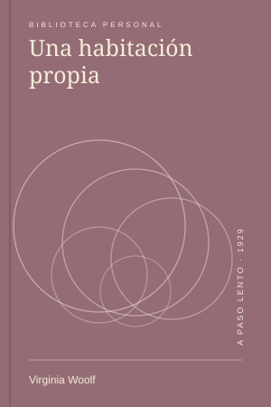
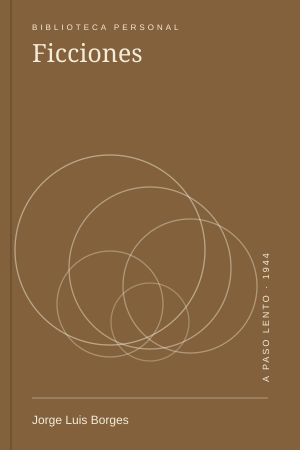

LecturasUna habitación propia, cien años después
Volver a Virginia Woolf para pensar el espacio, el tiempo y las condiciones de crear.
Entrar en un cuento como quien entra en una biblioteca que no termina.

Jorge Luis Borges · 1944 · 224 páginas
Leído · ★★★★★
Lo releí en trayectos de colectivo. Un cuento a la vez, con la ciudad moviéndose del otro lado del vidrio. La mezcla resultó extrañamente apropiada.
La primera vez intenté entender cada referencia. Esta vez dejé algunas puertas cerradas. Me interesó disfrutar el movimiento del relato antes de buscar todas sus llaves.
Hay libros que parecen apuntar hacia una respuesta. Este abre más estantes, más caminos, más dudas. Esa expansión puede ser una forma muy particular de alegría.
Volví a guardar el libro en la biblioteca con la certeza de que la próxima lectura sería distinta. No porque las páginas cambien, sino porque uno llega desde otro lugar.